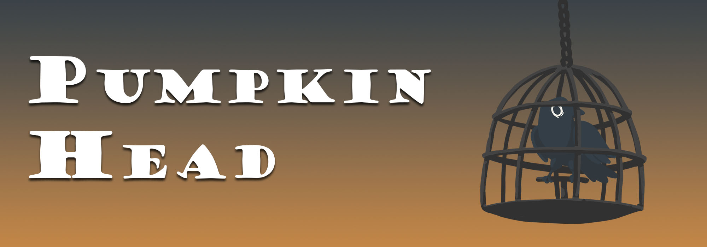

Exodus - Escape from the Lab
Exodus is a puzzle horror game where the player is trying to escape an underground laboratory while avoiding the dangerous results of failed human experiments. This is a group project and still in development. I have made, among other things, the enemies and the puzzle where the player slides pieces in a nine by nine grid to form an image.
Pumpkin Head
Pumpkin head is a short action platformer in which the player takes the role of a pumpkin headed character trying to save their friend from shadow monsters.
Interested in trying out the game? It can be found at itch.io.
Web portfolio

Portfolio website featuring some of my work.
Upside Down
Upside Down is a simple puzzle platformer, and it is one of the first games I've made. In the game the player has to solve puzzles and touch the green platform to get to the next level. It also has cubes that player can push around and two other kinds of platforms; a blue one that switches the gravity, and a pink one that makes the corresponding platform or wall disapear.